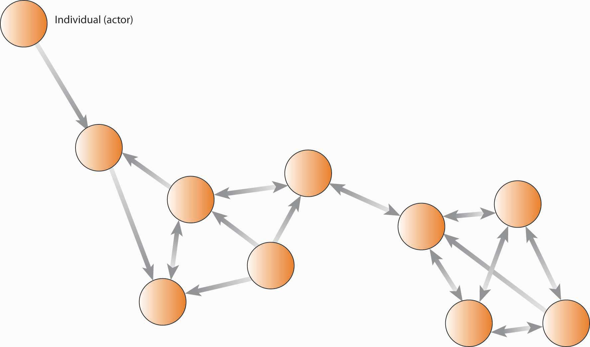
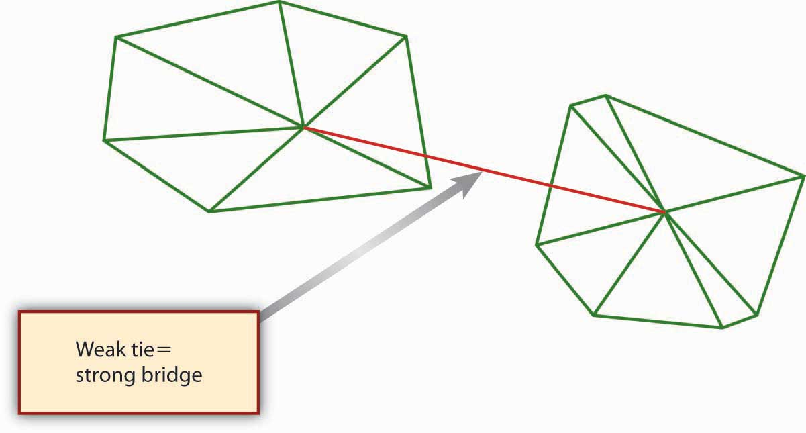
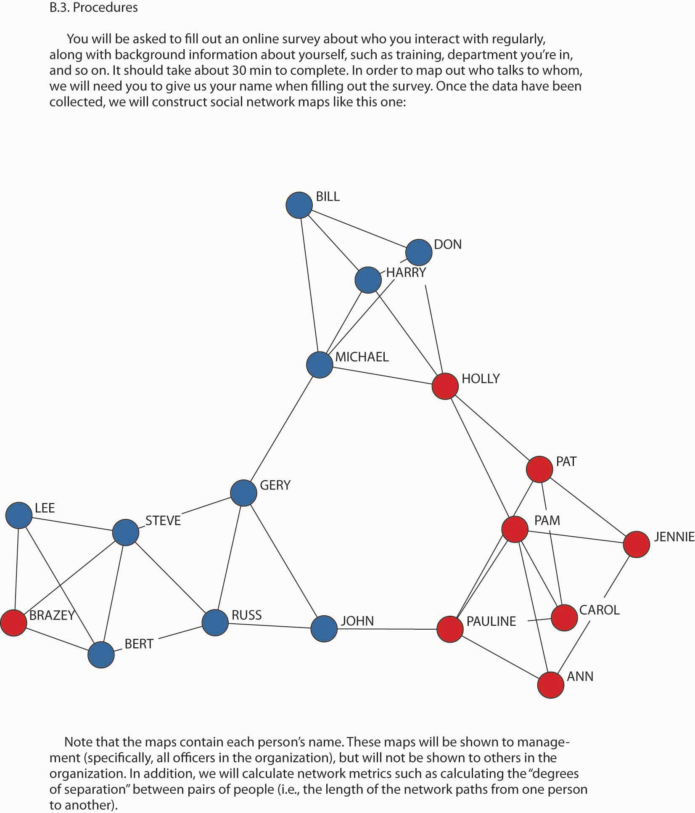
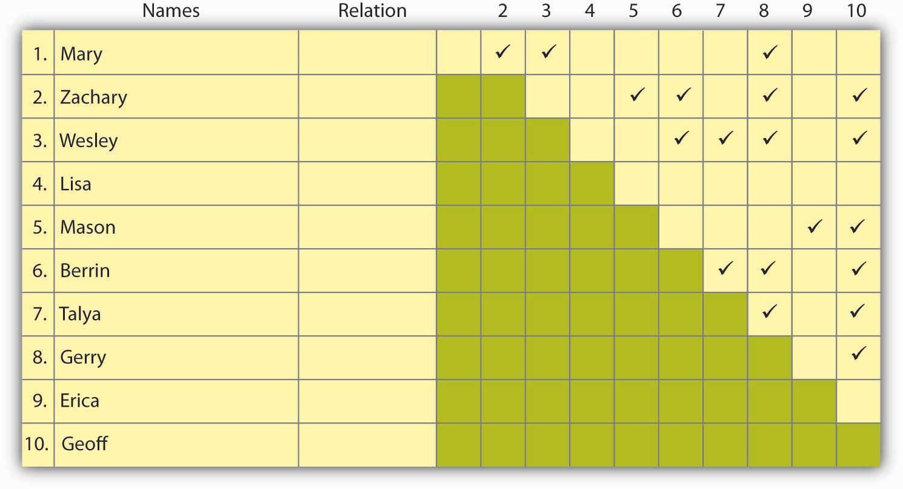

Reading this chapter will help you do the following:
Most management textbooks do not cover the subject of social networks. This is an unfortunate oversight. Social networks can be considered “the invisible organization”—they are the pathways through which communication and resources flow and how work actually gets done. We include this chapter on social networks in the organizing section of the book because, like organizational design, the management of social networks is important in the planning-organizing-leading-controlling (P-O-L-C) framework. An organization chart might communicate who reports to whom, but it is ultimately the internal (within organization) and external (ties between members of the organization and people outside the organization such as suppliers or customers) social networks that really explain productivity (or impediments to productivity).
Figure 9.2 The P-O-L-C Framework

You are probably already active in social networks through such Web communities as MySpace, Facebook, and LinkedIn. However, these sites are really only the tip of the iceberg when it comes to the role of social networks in management. Networks provide managers with three unique advantages: (1) access to information and knowledge, (2) access to diverse skill sets, and (3) power. While managers see these advantages at work every day, they might not pause to consider how their networks regulate them. In this chapter, you will learn about the role and importance of social networks, and social network analysis, in the organizing facet of the P-O-L-C framework. You will also have an opportunity to map and evaluate your own social network, and answer questions about its effectiveness for you personally and professionally.
Networking has the potential to open doors and create possibilities for jobs and partnerships. Networking establishes connections between individuals and access to information that one might not normally have access to. Reaching out to strangers can be an intimidating and nerve-racking experience. In business, the more central you are, the more power you have. Creating connections and ties to other people affords you the opportunity for power and the ability to more closely control your future, so while at times networking might feel awkward and uncomfortable, it is a necessary and important part of establishing and maintaining a career.
Online social networking sites play an important role in this networking process for individuals both professionally and personally. With 1,200 employees in 2010, Facebook has 350 million users around the world, and LinkedIn has over 60 million members in over 200 countries. A new member joins LinkedIn every second, and about half of the members are outside the United States. These online sites have created new opportunities for networking and allow individuals to branch out beyond their normal world of industry, school, and business. The key is to avoid costly missteps as employers have begun to search online for information about prospective and current employees. In 2009, 8% of companies reported that they had fired an employee for misuse of social media.
Many of these online sites have become a tool for business. For example, LinkedIn targets working professionals and provides them a way to maintain lists of business connections and to use those connections to gain introduction to people using mutual contacts. Unlike other social networking sites, LinkedIn is almost entirely used by professionals. The power of social networking flows in both directions. Employers can screen applicants through their online accounts and recruiters more than ever are using these sites to view background information, individual skill sets, and employment history, which can be cross-referenced with submitted applications. Job seekers can review the profiles of those at top management firms and search for mutual contacts. LinkedIn also provides statistics about firms, which can be useful information for individuals looking at potential employers.
Networking is about building your brand and managing relationships. Using social networks as a vehicle to market one’s self and make professional connections is becoming increasingly common, as well as using loose ties or connections through others to open doors and land jobs. In an increasingly high-tech and digital world, it is important to be aware and conscience of the digital footprint that we create. But with careful cultivation these online networks can present many opportunities.
Case written by [citation redacted per publisher request]. Based on information from Hof, R. (2008, October 28). Facebook in a suit: LinkedIn launches applications platform. BusinessWeek. Retrieved March 23, 2010, from http://www.businessweek.com/the_thread/techbeat/archives/2008/10/linkedin_launch.html; Horswill, A. (2009). How to get a job online using social networking. The Courier Mail. Retrieved March 23, 2010, from LexisNexis Academic database; Lavenda, D. (2010, March 10). 10 tips for safe and effective social networking. Fast Company. Retrieved March 23, 2010, from http://www.fastcompany.com/1577857/10-tips-for-safe-and-effective-social-networking; How to use social networking sites for marketing and PR. (2008, December 24). AllBusiness. Retrieved April 23, 2010, from http://www.allbusiness.com/marketing-advertising/public-relations/11674037-1.html; Ostrow, A. (2009, August). Facebook fired: 8% of US companies have sacked social media miscreants. Mashable. Retrieved March 30, 2010, from http://mashable.com/2009/08/10/social-media-misuse.
This section draws on extensive social network research to help you understand the managerial implications of that body of knowledge. Social networks often complement or compete with such aspects of organizations as formal organization structure (think “org chart”), work processes (think “job description”), human resource practices, leadership style, and organization culture. This is particularly problematic in knowledge-intensive settings where management is counting on collaboration among employees with different types of expertise. People rely heavily on their networks of relationships to find information and solve problems—one of the most consistent findings in the social science literature is that who you know often has a great deal to do with what you come to know.An excellent review of this literature is found in Kilduff, M., & Tsai, W. (2004). Social networks and organizations. Beverly Hills, CA; Sage. Yet both practical experience and scholarly research indicate significant difficulty in getting people with different expertise, backgrounds, and problem-solving styles to integrate their unique perspectives effectively.It is one problem to learn or act on knowledge with others who think like you (such as in a community of practice); however, it is an entirely different problem to do this in diverse social contexts, such as cross-functional teams, where people often do not share a common vision, language, metrics of performance, or even understanding of the problem. For example, sociologists have demonstrated how correct information can have little or no effect on critical decision processes. Vaughn, D. (1996). The Challenger launch decision: Risky technology, culture and deviance at NASA. Chicago: University of Chicago Press. Further, organizational theorists have shown that a person’s knowledge can be role constrained. March, J., & Olsen, J. (1975). The uncertainty of the past: Organizational learning under ambiguity. European Journal of Political Research, 3, 147–171. From a manager’s standpoint, simply moving boxes on an organizational chart is not sufficient to ensure effective collaboration among workers.
If you were asked for a definition of a social network, your intuition would probably provide you with a pretty close answer. A social networkA patterned set of relationships between two or more people. can be characterized as a patterned set of relationships between two or more people—or, as they are called in the social science literature, actorsThe individuals, groups, organizations, or supraorganizations that comprise the network.. It can be depicted in a sociogramA diagram of points and lines used to represent relations among network actors., as shown in the following figure. The term “actors” is broader, as it includes all possible types of information/knowledge processing entities: the individuals, groups, organizations, or supraorganizations that constitute the network.Granovetter, M. (1985). Economic action and social structure: The problem of embeddedness. American Journal of Sociology, 91, 481–510; Granovetter, M. (1995). Getting a job: A study of contacts and careers (2nd ed.). Chicago: University of Chicago Press. For instance, all of the people named in the figure are actors, but you could also consider each work group or department as an actor if you were concerned with the interaction among these groups rather than with the interaction within the groups or among individuals. The characteristics of a social network also are the determinants of social capitalThe resources available in and through personal and business networks., that is, the resources—such as ideas, information, money, trust—available in and through personal and business networks. You can have social capital, as can organizations. However, since social capital is based on relationships, no single person can claim ownership of it, but it is important and manageable.
Figure 9.4 Sociogram: A Simple Social Network
The mapping and measuring of relationships and flows among people, groups, organizations, computers, Web sites, and other actors is called social network analysisMapping and measuring of relationships and flows among network actors. (SNA), which we will discuss in greater detail later in the chapter. Each connection, or relationship, between actors is known as a network tieThe connection between actors., while each actor, or point on the network, is referred to as a nodeThe point, often another individual or actor, where two other actors are connected.. In the previous figure, Thomas is a node and his connections to Albert, Eric, Martha, and others are network ties. Direct tiesTies where a single link spans actors. are those in which a single link spans two actors; indirect tiesWhere connections exist between actors, but where the connection spans more than one link. are where connections exist between actors, but only through other actors (hence, indirect ties). You can see that Thomas has four direct ties and is indirectly tied to everyone in the network. Conceptually, you probably have indirect ties to everyone on the planet but that does not necessarily mean they come to mind as part of your social network.
Figure 9.5 Example of a Social Network Based on Information Ties

Figure 9.6

Actor Kevin Bacon founded sixdegrees.org to help charities network and share resources.
Network sizeThe number of actors in the network. would be the number of actors. Though you might be interested in the count of all network members, you also might want to know how many people are one, two, or three links away. Long before computer networking was invented, psychologists Jeffrey Travers and Stanley Milgram conducted a low-tech experiment that looked directly at this question.Travers, J., & Milgram, S. (1969). An experimental study in the small world problem. Sociometry, 32(4), 425–443. They asked how many links might be necessary to get an envelope from one randomly chosen person to another randomly chosen person in the United States. They found that, on average, there were six links—or “degrees of separation”—between any two people randomly drawn from the U.S. population (at the time) of 250 million. Flipping the numbers around, Travers and Milgram then estimated that each individual had a potential network of 3,000 to 10,000 people. You may be familiar with this larger body of work in terms of “how many degrees of separation are you from Kevin Bacon?” or the notion of the “six degrees of separation.”
The extent to which a given actor is in the middle of the network is referred to as centralityThe degree to which an actor has the most unique links to other actors in the network. (i.e., network centrality), though the definition of “middle” can vary from who has the most ties, to who is the unique connection between two other groups. Centrality is good because it puts the actor in a position to gather information, and to serve as broker between the parties that are connected via that actor.
Another basic network indicator is densityThe degree to which there are overlapping linkages among the actors in a network., which essentially reflects how many people in a network are connected (usually directly) to each other. You can imagine that there are a number of possible network configurations based simply on permutations of network size, centrality, and density. For instance, you can have a large or tiny network, be central or peripheral in the network, and have a dense or sprawling network. Each of these structures has implications for how the network might serve its various actors.
The tie between actors can be directional or bidirectional (i.e., reciprocal flows between actors); similarly, a network can be described as social, personal, professional, informational, and so on, depending on what is of most interest.
As a manager, you might be interested in your employees’ (1) communication network, (2) information network, (3) problem-solving network, (4) knowledge network, or (5) access network.These dimensions, and their specific definitions, are taken from Cross, R., Borgatti, S., & Parker, A. (2002). Making invisible work visible California Management Review, 44(2), 25–46. A communication networkThe informal structure of an organization as represented in ongoing patterns of interaction, either in general or with respect to a given issue. is the informal structure of an organization as represented in ongoing patterns of interaction, either in general or with respect to a given issue. For instance, people on the same office floor may periodically congregate in the break room or by the soda machine and engage in informal communication. For this reason, some descriptions of social networks focus on the informal network. That is, the pattern of interactions among employees that aren’t a direct consequence of the organization chart, job descriptions, and so on.
An information networkShows who goes to whom for advice on work-related matters. shows who goes to whom for advice on work-related matters. For example, if you have a question about filling out a form, or answering a customer’s question, who do you regularly seek out for answers? A problem-solving networkIndicates who goes to whom to engage in dialogue that helps people solve problems at work. indicates who goes to whom to engage in dialogue that helps people solve problems at work. For instance, “whenever this machine breaks down I know I can turn to Pat for help.” A knowledge networkCaptures who is aware of whose knowledge and expertise. captures who is aware of whose knowledge and skills, and an access networkShows who has access to whose knowledge and expertise. shows who has access to whose knowledge and expertise.
The example with Pat is also a knowledge network because it appears that you understand that Pat has the needed knowledge, and there is no barrier impeding your access to Pat. However, if the organization had rules telling you that you needed to talk to Pat’s boss before getting assistance from Pat, then the knowledge network and access network would look different. You can imagine that each of these types of networks might reveal a different structure, depending on the question—for example, the linkages would be different across iterations of the figure. You can see that information is flowing back and forth between different actors in the network. However, it does not appear that information is flowing directly between all network members—for instance, the sales and marketing, finance, and operations staff do not communicate directly with each other. However, if you were to combine the staff from those functions in the same office space, you would likely create a new communication network, which in turn could change the information ties of all the members.
More recent work in social network research has also considered the way that individuals interact, as well as their potential impact on network relationships.Bavelas, A. (1950). Communication patterns in task-oriented groups. Journal of Acoustical Society of America, 22, 725–730; Leavitt, H. (1951). Some effects of certain communication patterns on group performance. Journal of Abnormal and Social Psychology, 46, 38–50; Shaw, M. (1964). Communication networks. In L. Berkowitz (Ed.), Advances in experimental social psychology. New York: Academic Press. Five key dimensions of work quality can also be taken into account with social networks: (1) activity, (2) control, (3) access, (4) influence, and (5) power. ActivityGauges how active an actor is in a network. gauges how active a person is in the network. For example, an individual may be in the network, but actually do little to affect what is going on. ControlGauges how much control an actor has over the flow of information in a network. gauges how much control a person has over the flow of information. Centrality is obviously one indicator of control, but there may be other determinants of control such as intelligence, personality, or even a particular skill set. In highly technical fields, for example, one individual (a node) can make a big difference on information flow, even if he or she is situated in a fairly open and balanced network. AccessTells you how easily a person in the network can get the resources that he or she needs to be successful in the organization. tells you how easily a person in the network can get the resources that he or she needs to be successful in the organization. How many steps, for instance, are they away from those individuals or units that are most instrumental for their success? InfluenceA stakeholder’s relative power over and within an organization. and powerA stakeholder’s ability to get things done. are different but related characteristics. Influence shows how much potential influence a person wields in the network, while power tells you how able they are to get things done. You may be interested in other dimensions of work quality, so feel free to experiment with them in SNA.
Social networks are the invisible structure in organizations—they capture the actual pathways of how information flows and how work is done. Network size, centrality, and density were identified as key features of social networks, and you have a general understanding of at least five types of social networks: communication, information, problem solving, knowledge, and access.
You probably have an intuitive sense of how and why social networks are valuable for you, personally and professionally. The successful 2008 U.S. presidential campaign of Barack Obama provides a dramatic example of how individuals can benefit when they understand and apply the principles and power of social networking.Cox, C. (2008, October 7). Retrieved November 13, 2008, from http://blog.styleapple.com/styleapple-creative-design-blog-the-place-where-creative-pros-flex-their-muscles/bid/5866/Arguably-The-Most-Effective-Branding-Campaign-Ever. In this section, we discuss three fundamental principles of social network theory, then help you see how social networks create value in your career and within and across organizations.
Across all social networks, performance depends on the degree to which three fundamental principles are accounted for.Kilduff, M., & Tsai, W. (2004). Social networks and organizations. Beverly Hills, CA; Sage. The first is the principle of reciprocityThe principle that actors in a network are more likely to reciprocate favors., which simply refers to the degree to which you trade favors with others. With the principle of reciprocity, managers have the ability to get things done by providing services to others in exchange for the services they require. For instance, you are more likely to get assistance with a problem from a colleague at work when you have helped him or her out in the past. Although the quid pro quo may not be immediate, over time managers will receive only in proportion to what they give. Unless the exchanges are roughly equivalent over time, hard feelings or distrust will result. In organizations, few transactions are one-shot deals. Most are ongoing trades of “favors.” Therefore, two outcomes are important: success in achieving the objective and success in improving the relationship such that the next exchange will be more productive.
The second principle is the principle of exchangeThe principle that network exchange is more likely when you have access to unique resources.. Like the reciprocity principle, it refers to “trading favors,” but it is different in this way: the principle of exchange proposes that there may be greater opportunity for trading favors when the actors are different from one another. In fact, according to network theory, “difference” is what makes network ties useful in that such difference increases the likelihood that each party brings a complementary resource to the table. Going back to our example where you sought out assistance from a colleague, you probably needed that assistance because that person brought a different skill set, knowledge, or other resources to bear on the problem. That is, since you were different, the value of exchange was greater.
The third principle is the principle of similarityThe principle that network ties are more likely to form among similar, rather than dissimilar, actors.. Psychologists studying human behavior have observed that relationships, and therefore network ties, tend to develop spontaneously between people with common backgrounds, values, and interests. Similarity, to the extent that your network is composed only of like-minded folks, also makes it more likely that an individual may be dependent on a handful of people with common interests.
Why is it important to understand these three principles? As a manager, you will find your network useful to the extent that you can balance the effects of the three principles. Because of similarity, it is easier to build networks with those with whom you have various things in common, though this similarity makes the network less useful if you need new ideas or other resources not in the current group. A critical mistake is to become overly dependent on one person or on only a few network relationships. Not only can those relationships sour but also the manager’s usefulness to others depends critically on his or her other connections. Those people most likely to be attractive potential protégés, for example, will also be likely to have alternative contacts and sponsors available to them.
Similarity also means that you have to work harder to build strong exchange networks, since their formation is not spontaneous. Most personal networks are highly clustered—that is, your friends are likely to be friends with one another as well. And, if you made those friends by introducing yourself to them, the chances are high that their experiences and perspectives echo your own. Because ideas generated within this type of network circulate among the same people with shared views, a potential winner can wither away and die if no one in the group has what it takes to bring that idea to fruition. But what if someone within that cluster knows someone else who belongs to a whole different group? That connection, formed by an information broker, can expose your idea to a new world, filled with fresh opportunities for success. Diversity makes the difference.
Finally, for reciprocity to work, you have to be willing and able to trade or reciprocate favors, and this means that you might need access to other people or resources outside the current network. For example, you may have to build relationships with other individuals such that you can use them to help you contribute to your existing network ties.
We owe our knowledge about the relationship between social network characteristics and finding a job to Stanford sociologist Mark Granovetter. In a groundbreaking study, Granovetter found that job seekers are more likely to find a job through weak ties than through strong ties.Granovetter, M. (1974). Getting a job: A study of contacts and careers (2nd ed.). Chicago: University of Chicago Press. He demonstrated that while job hunters use social connections to find work, they don’t use close friends. Rather, survey respondents said they found jobs through acquaintances: old college friends, former colleagues, people they saw only occasionally or just happened to run into at the right moment. New information, about jobs or anything else, rarely comes from your close friends, because they tend to know the same things and people you do. Strong tiesA tie that exists among actors who know each other well and engage in regular exchange., as you might expect, exist among individuals who know one another well and engage in relatively frequent, ongoing resource exchanges. Weak tiesA tie that exists among actors who do not know one another well and engage in infrequent exchange., in contrast, exist among individuals who know one another, at least by reputation, but who do not engage in a regular exchange of resources. In fact, Granovetter showed that those who relied on weak ties to get a job fared better in the market in terms of higher pay, higher occupational status, greater job satisfaction, and longer job tenure. While much in the world has changed since Granovetter’s 1974 research, subsequent studies continue to affirm his basic findings on the consequences of social network structure.Goleman. D. (2006). Social intelligence. New York: Bantam. As you might expect, for weak ties to be effective though, there must be some basis for affinity between the indirectly connected individuals, but this affinity can simply be having the same birth month or high school or college alma mater.
Figure 9.8 The Value of Weak Ties
The value of weak ties is highly counterintuitive; we tend to think of relationships being more valuable when we have strong ties to others. However, if you think about it, the value of a weak tie lies in the fact that it is typically a bridging tieA tie that provides nonredundant information and resources., that is, a tie that provides nonredundant information and resources. In the case of a job search, the weak tie serves as a strong bridge. “Social Networking as a Career-Building Strategy” suggests some personal strategies you might consider with your own social networks.
Penelope Trunk, author of “The Brazen Careerist” column and blog (blog.penelopetrunk.com), views job hunting not as an event but as a lifestyle. She advises that in today’s business environment, people change jobs so often that they need to keep their eye on the market even if they just started a new job. In her view, “the people who control their destiny most effectively leave their job when they find a better one, not when they are tossed out because of layoffs or reorganizations.” This also means that social networking should be a central element in any job-search strategy. And because many jobs are filled by knowing someone who knows about an open position, Trunk argues that it’s more important to network than it is to read the want ads. Trunk evokes the principle of reciprocity when she says, “building a network is adding value to lots of peoples’ lives so that they, in turn, will want to add value to yours.” Another useful strategy is to network proactively rather than reacting to concerns about your present job or news of a possible opening. By being proactive, you will increase your chances of being in the right place at the right time.
Career networking opportunities are plentiful; regardless of where you live, you can use the Internet to read blogs, subscribe to e-mail newsletters, and make friends on social networking sites. When you consider the principle of exchange, you realize that your networking possibilities are not limited to people in your chosen field—you can actually gain more by networking with those in related fields, or even in jobs far removed from yours. With the exchange principle in mind, even residents of sparsely populated rural areas can network with their neighbors a few miles down the road.
Adapted from Trunk, P. (2008, March 1). Take control of your career destiny. Wisconsin State Journal, B1.
LinkedIn (http://www.LinkedIn.com) is the largest online network of experienced professionals from around the world, representing 150 industries. Other business networking sites include Plaxo.com, Ryze.com, and Xing.com (primarily Europe and China). Here are eight effective networking job-hunting tactics to employ with LinkedIn (or with any networking site):
It is important to note here a factor called Dunbar’s numberNamed after anthropologist Robin Dunbar, Dunbar’s number is the conceptual upper limit of 150 ties in a network if ties are to be effectively maintained.. That is, there is some natural upper limit to the size of network you can effectively maintain, even with online tools like Facebook and LinkedIn. The existence of an upper boundary makes sense if you think about it—each contact you add to your network will likely require some amount of time to sustain. In 1993, Oxford anthropologist Robin Dunbar theorized that “this limit is a direct function of relative neocortex size [your brain’s center of higher brain functions], and that this in turn limits group size…the limit imposed by neocortical processing capacity is simply on the number of individuals with whom a stable inter-personal relationship can be maintained.”Bialik, C. (2007, November 16). Sorry, you may have gone over your limit of network friends. Wall Street Journal. On the periphery, the number also includes past colleagues such as high school friends with whom a person would want to get reacquainted if they met again.
Figure 9.9
Mark Zuckerberg, cofounder of Facebook, helped to bring social networking to 90 million users.
In 2002, organizations researchers Rob Cross, Steve Borghatti, and Andrew Parker published the results of their study of the social networking characteristics of 23 Fortune 500 firms.Cross, R., Borgatti, S., & Parker, A. (2002). Making invisible work visible. California Management Review, 44(2), 25–46. These researchers were concerned that traditional analysis of organizational structure might miss the true way that critical work was being done in modern firms—that is, they theorized that social networks, and not the structure presented on the organization chart, might be a better indicator of the flow of knowledge, information, and other vital strategic resources in the organization. One goal of their research was to better define scenarios where conducting a social network analysis would likely yield sufficient benefit to justify the investment of time and energy on the part of the organization.
Cross and colleagues found that SNA was particularly valuable as a diagnostic tool for managers attempting to promote collaboration and knowledge sharing in important networks. Specifically, they found SNA uniquely effective in:
Consumer product giant Procter & Gamble (P&G) pioneered the idea of connect and develop, which refers to developing new products and services through a vast social network spanning parts of P&G and many other external organizations. Like many companies, P&G historically relied on internal capabilities and those of a network of trusted suppliers to invent, develop, and deliver new products and services to the market. It did not actively seek to connect with potential external partners. Similarly, the P&G products, technologies and know-how it developed were used almost solely for the manufacture and sale of P&G’s core products. Beyond this, P&G seldom licensed them to other companies.
However, around 2003 P&G woke up to the fact that, in the areas in which its does business, there are millions of scientists, engineers, and other companies globally. Why not collaborate with them? P&G now embraces open innovation, and it calls this approach “Connect + Develop.” It even has a Web site with Connect + Develop as its address (http://www.pgconnectdevelop.com). This open innovation network at P&G works both ways—inbound and outbound—and encompasses everything from trademarks to packaging, marketing models to engineering, and business services to design.
On the inbound side, P&G is aggressively looking for solutions for its needs, but also will consider any innovation—packaging, design, marketing models, research methods, engineering, and technology—that would improve its products and services. On the outbound side, P&G has a number of assets available for license: trademarks, technologies, engineering solutions, business services, market research methods and models, and more.
As of 2005, P&G’s Connect + Develop strategy had already resulted in more than 1,000 active agreements. Types of innovations vary widely, as do the sources and business models. P&G is interested in all types of high-quality, on-strategy business partners, from individual inventors or entrepreneurs to smaller companies and those listed in the FORTUNE 500—even competitors. Inbound or out, know-how or new products, examples of success are as diverse as P&G’s product categories. Some of these stories are shown in “P&G Connect + Develop Success Stories.”
Bringing Technology Into P&G
Olay Regenerist
How a small French company became part of P&G Beauty’s $2 billion brand
A few years ago, the folks in P&G’s skin care organization were looking both internally and externally for antiwrinkle technology options for next-generation Olay products. At a technical conference in Europe, P&G first learned of a new peptide technology that wound up being a key component used in the blockbuster product, Olay Regenerist.
The technology was developed by a small cosmetics company in France. They not only developed the peptide but also the in vitro and clinical data that convinced P&G to evaluate this material. After they shared some of their work at a conference attended by P&G’s skin-care researchers, they accepted an invitation for their technologists to visit P&G and present their entire set of data on the antiwrinkle effects of the new peptide. This company now continues to collaborate with P&G on new technology upstream identification and further upstream P&G projects.
Taking Technology Out of P&G
Calsura
Not all calcium is created equal.
When P&G was in the juice business, it discovered Calsura, a more absorbable calcium that helps build stronger bones faster, and keeps them stronger for life. The addition of Calsura calcium makes any food or drink a great source of the daily calcium needed for building stronger bones faster in kids, and keeping bones stronger throughout adulthood; Calsura is proven to be 30% more absorbable than regular calcium. Today, P&G licenses the Calsura technology to several companies.
University Collaboration
University of Cincinnati Live Well Collaborative
Collaborating with a university in a new way
P&G has partnered with the prestigious design school at the University of Cincinnati to develop products specifically for consumers over age 50. Using design labs, university students and P&G researchers collaborate to study the unique needs of the over-50 consumer. The goal is to develop and commercialize products that are designed for this consumer bracket.
Adapted from http://www.pg.com (retrieved June 4, 2008).
Strategy consultant McKinsey & Company points to recent academic research that finds differences in individual creativity and intelligence matter far less for organizational innovation than connections and networks. That is, networked employees can realize their innovations and make them catch on more quickly than nonnetworked employees can.Fleming, L., & Marx, M. (2006). Managing creativity in small worlds. California Management Review, 48(4), 6–27.
On the basis of what was found by Cross and colleagues across many large firms, within P&G in particular, and in their own research, McKinsey has observed four important steps in the innovation network process.How companies approach innovation: A McKinsey global survey. (2007). McKinsey Quarterly. These four critical steps in designing, implementing, and managing an innovation network are summarized in the following figure.
Figure 9.10 Managing the Innovation Network

Adapted from http://www.mckinseyquarterly.com (retrieved June 4, 2008).
The first step, connect, involves the identification of key people in the organization with an innovation mind-set. Such individuals are not wed to the status quo and are comfortable with change and uncertainty. It is important to involve individuals with different backgrounds and approaches to innovation. For instance, some individuals are great at generating ideas while others may be better at researching and validating them. This group of individuals would then be defined as a network. The second step, set boundaries and engage, is where the network’s goals and objectives are defined. It is important to make it clear how the network’s goals and objectives will contribute to the organization’s goals and larger strategy, mission, and vision. Time frames and desired target outcomes are stated as well.
In the third step, support and govern, the leadership structure for the network is decided on, along with any protocols for meeting, sharing ideas, and decision making. With these process guidelines in place, the network members can then make sure that they have identified the resources necessary to conduct their work. This includes gaining sponsorship and buy-in from other parts of the organization, including upper management. Finally, the fourth step involves managing and tracking. This last step covers a spectrum of needs, ranging from how network members will be recognized and rewarded for their contributions, the agreement about process-tracking criteria, and some guidelines on how new members join the network and others leave.
As mentioned in the connect stage of developing an innovation network, you can fine-tune the network’s goals by identifying the appropriate mix and balance of employees. Innovation networks, like cross-functional teams, require different skills and attitudes. In McKinsey’s experience, they include combinations of several archetypes. Which one are you?
This section showed how social networks create value. We started by introducing the social network theory concepts of reciprocity, exchange, and similarity. We then discussed using social networks as a vehicle for advancing your own career. The section concluded by explaining how social networks create value in and across organizations, with specific examples of making invisible work visible, Procter & Gamble’s Connect + Develop, and McKinsey’s “innovation network” concept.
Before delving into the ethical issues, let’s revisit social network analysis. Social networking is built on the idea that there is a determinable structure to how people know each other, whether directly or indirectly. Notions such as six degrees of separation—that everyone on earth is separated from everyone else by no more than six intermediate personal relationships—have popularized the idea that people can be (however unknowingly) connected through common associates. As we mentioned at the beginning of this chapter, social network analysisMapping and measuring of relationships and flows among network actors. (SNA) is the mapping and measuring of relationships and flows between people, groups, organizations, computers, Web sites, and other information/knowledge processing entities. This can be done with paper and pencil surveys, software programs, and even comparing e-mail and phone logs, but the desired output is essentially the same. Social networks are the invisible organization. That is, they are the actual organization behind the printed organization chart.
Application of the principles behind P-O-L-C should help managers lead their organizations to bigger and better things, and social networks are a key ingredient in the “organizing” component.We have adapted these ethical concerns from Borgatti, S. P., & Molina, J.-L. (2003). Ethical and strategic issues in organizational network analysis. Journal of Applied Behavioral Science, 39(3), 337–349, and Borghatti, S. P., & Molina, J.-L. (2005) Toward ethical guidelines for network research in organizations. Social Networks, 27, 107–117. So, what harm can there be if a manager uses SNA to uncover the invisible structure in their organization? Three top ethical concerns are (1) violation of privacy, (2) psychological harm, and (3) harm to individual standing. Let’s look at each of these three ethical concerns in turn.
Managers typically use surveys (sometimes with the aid of consultants) to capture and map the structure of a social network. If each employee has consented to the survey, then the manager is on much more solid ground. Care must be taken, however, that participants are aware of the survey’s objectives and applications. Recall that a network diagram reflects a pattern or relationship among people, such that survey participants will actually be reporting, by definition, on what other individuals are doing. For instance, if a communication network in your organization is being mapped, you might be asked who you initiate communication with and who initiates it with you. You might also be asked for some indication of communication frequency. So, even if you agreed to complete the survey, the other people that you identify as part of your network may have not.
Surveys are not the only basis for mapping social networks. Indeed, think about the network that might be reflected by the contacts on your cell phone or e-mail lists. Given technology today this data could be readily converted into a social network map showing who corresponded with whom and the length of such correspondence. Moreover, with content coding software, even the content of the e-mails could be coded. This type of social network mapping has more obvious ethical implications because participants of the map may never know that they are actually being mapped!
In both the survey-based and electronic mapping approaches, you might keep the identities of individuals confidential, thereby protecting their privacy. However, it may be possible to guess the names of individuals by virtue of their location in the network. For example, if a certain type of information can only originate with one part of an organization, it might be pretty obvious to inside observers how such information flowed internally and externally. Similarly, “organizations are typically quite small, so that even a small number of attributes can uniquely identify individuals.”Borghatti, S. P., & Molina, J.-L. (2005). Toward ethical guidelines for network research in organizations. Social Networks, 27, 107–117. Second, demographic information on each person is often available in the human resources database or is common knowledge because everyone knows everyone else. Even if the outcome of such informal information flows is positive, the actual communication may be prohibited internally by organizational rules and procedures. For example, you are likely familiar with the way Post-its were developed at 3M through internal entrepreneurial actions—at the time, however, some of those actions were not an explicit part of 3M’s rules and procedures (though, fortunately for 3M, its “bootlegging policy” gave the inventors an opportunity to explore market options for the adhesive that did not stick).To foster creativity, 3M encourages technical staff members to spend up to 15% of their time on projects of their own choosing. Also known as the “bootlegging” policy, the 15% rule has been the catalyst for some of 3M’s most famous products, such as Scotch Tape and—of course—Post-it notes. Retrieved November 17, 2008, from http://solutions.3m.com/wps/portal/3M/en_HK/post-it/index/post-it_past_present/history/the_whole_story?PC_7_RJH9U523086C5023CPSB8R18O2_assetType=MMM_Article&PC_7_RJH9U523086C5023CPSB8R18O2_assetId=1180595718358&PC_7_RJH9U523086C5023CPSB8R18O2_univid=1180595718358.
The two remaining ethical issues are somewhat related. As you can imagine from the previous examples, violation of privacy might lead to unforeseen, and possibly unwarranted, disciplinary action. This would harm an individual’s standing. For instance, if a social network map revealed that one individual or an entire department is the bottleneck for information flowing from one part of the organization to another, action might be taken against that individual or members of the department. It may truly be the case that this person or department is a roadblock to progress; but it may just as likely be the case that managers on one side or the other (in terms of social network) of the apparent bottleneck are not very good at delegating or eliciting information. Similarly, the organization may just be trying to run too much through one particular individual in the network. What one views as an indication of individual incompetency may, in fact, be a need for training or the addition of staff to move the information more effectively.
The possible harm to individual standing should be noted if 3M had used a social network map to understand the roots of its Post-it homerun and had internal policies prohibiting the use of time and money on nonapproved projects. If a network survey revealed that 3M’s breakthrough was caused by rogue employees—that is, employees who were not following the rules about new product development and so on—the individual credited with that innovation might have been reprimanded or fired. This, of course, was not the case in 3M, but you can imagine how organizational policies meant to foster internal efficiencies might prohibit an individual from contravening them, regardless of the benefits of the eventual outcome.
Finally, the purpose of the network analysis may be to identify areas of the firm that just aren’t critical to its mission, vision, and strategy. As social network researchers Steve Borgatti and Jose-Luis Molina note, “This introduces dangers for the respondents because management may make job or personnel changes (e.g., firing non-central workers) based on the network analysis. In fact, in the case of a consulting engagement, this may be the explicit purpose of the research, at least from the point of view of management.”Borghatti, S. P., & Molina, J.-L. (2005). Toward ethical guidelines for network research in organizations. Social Networks, 27, 107–117. Obviously, one of the roles of management is to determine the efficient and effective allocation of resources. SNA can be a useful tool in this determination, but the purpose of the analysis should be made clear to participants from the outset.
This third area can be subtle, but it is very important as well. Psychological harm might arise when information is used in a way that manipulates the behavior of individuals. For instance, managers are likely to develop maps of social networks because their managers believe that there might be better ways of planning, organizing, leading, and controlling. As Borgatti and Molina point out, however, SNA in this context is explicitly part of a transformation process in which the group is shown data about itself, such as network diagrams, and asked to react to it. Experience suggests that this technique serves as a powerful catalyst for change. “It is dangerous, however, because of the powerful emotions it engenders in a group setting and this can put the researcher in the position of practicing therapy without a license.”Borghatti, S. P., & Molina, J.-L. (2005). Toward ethical guidelines for network research in organizations. Social Networks, 27, 107–117 (quote on p. 114).
Now that you understand some of the ethical issues arising from SNA you are in a better position to anticipate and manage them. Of course, we should refresh your memory on the general ethical decision-making guidelines before delving into more SNA-specific ones. In brief, the following are the six steps:Hartman, L., & DesJardins, J. (2008). Business ethics: Decision-making for personal integrity and social responsibility. New York: McGraw-Hill.
Consider the alternatives you have available to you and how they affect the stakeholders. These include:
Beyond these general guidelines, there are three specific ways that you might manage SNA related ethical concerns. These are (1) full disclosure, (2) anonymization and opt-out options, and (3) participant training and feedback. Let’s look at each of these in turn.
First, you might consider some way of applying the notion of informed consent to the participants of an exercise that maps the organization’s social networks. This means that each person included in the mapping process would be told the purpose of the exercise, along with what the outcome would look like. We provide an example disclosure form where they would also be apprised of the possible risks. For instance, one SNA informed consent form includes the following paragraph:
Risks and costs Since management will see the results of this study, there is a chance that someone in management could consider your set of communication contacts to be inappropriate for someone in your position, and could think less of you. Please note, however, that the researchers have obtained a signed agreement from management stipulating that the data will be used for improving communication in the company and will not be used in an evaluative way.Borghatti, S. P., & Molina, J.-L. (2005). Toward ethical guidelines for network research in organizations. Social Networks, 27, 107–117.
Second, managers can consider different ways of making the process anonymous or giving individuals the option to opt-out of the mapping process. For example, department-level network information could be presented instead of individual-level information. Where it is impossible to protect the privacy wishes of one individual, then an op-out option is the only way to protect their privacy, though this will clearly affect the accuracy of the SNA. If an individual opts out, this should mean that their name appears nowhere on the social network diagram (even if they are identified by another individual as being part of their social network). For instance, in the sample map, you can see that the map would be very disjointed if John and Holly opted out of the SNA.
Figure 9.12 A Social Network Survey Participant Disclosure Form
Source: Reproduced with permission of Borghatti, S. P., & Molina, J.-L. (2005). Toward ethical guidelines for network research in organizations. Social Networks, 27, 107–117.
Finally, managers can consider the application of SNA in conjunction with a larger employee development program where participants are taught about social network analysis and then their results are debriefed with them one on one. Where there are still concerns for privacy, individuals can map their own social networks and then act on them personally. It is management’s responsibility to steward the organization’s resources in a way that is consistent with the mission and vision. In that sense, SNA is a valuable tool for understanding how the organization’s work actually gets done. However, because it is such a powerful and revealing tool, managers must be thoughtful in its ethical application.
We close this section with some discussion of why it might actually be unethical to neglect the organization’s social network. Be sensitive to the ethical issues surrounding the management of social networks, but that does not mean leaving social network relationships to chance. For instance, if you know that your department would be more productive if person A and person B were connected, as a manager wouldn’t you want to make that connection happen? In many firms, individuals are paid based on performance, so this connection might not only increase the department’s performance, but its personal incomes as well.
The broader issue is that social networks exist and that the social capital they provide is an important and powerful vehicle for getting work done. That means that the ethical manager should not neglect them. Wayne Baker, author of Achieving success through Social Capital, puts it this way:
“The ethics of social capital [i.e., social network relationships] requires that we all recognize our moral duty to consciously manage relationships. No one can evade this duty—not managing relationships is managing them. The only choice is how to manage networks of relationships. To be an effective networker, we can’t directly pursue the benefits of networks, or focus on what we can get from our networks. In practice, using social capital means putting our networks into action and service for others. The great paradox is that by contributing to others, you are helped in return, often far in excess of what anyone would expect or predict.”Baker, W. (2000). Achieving success through social capital. San Francisco: Jossey-Bass.
Now that you have a better understanding of social networks and SNA you need to understand some of the ethical implications of the application of such knowledge. You learned that SNA gives rise to concerns about privacy, harm to individual standing, and psychological harm. You were reminded that the general ethical decision-making framework applies to your use of SNA, but you also learned some specific approaches to managing SNA-related ethical issues. Finally, you were presented with arguments about why neglect of an organization’s social network also can have negative ethical implications.
This section draws heavily on recent research by Herminia Ibarra, Brian Uzzi, and others, to help you understand the different forms that social networks can take. Ibarra and Uzzi have been studying the social networks and social networking tactics and strategies of managers for more than 20 years and are considered thought-leaders in the field.Ibarra, H., & Hunter, M. (2007, January). How leaders build and use networks. Harvard Business Review, 40–47. Ibarra, H. (2006). Career Change. In J. H. Greenhaus & G. A. Callanan (Eds.), The encyclopedia of career development, 7782. Beverly Hills, CA; Sage. Their most recent work suggests that strong, useful networks don’t just happen at the watercooler. They have to be carefully constructed.
What separates successful managers from the rest of the pack? Networking: creating a fabric of personal contacts to provide the support, feedback, and resources needed to get things done. Yet many managers avoid networking. Some think they don’t have time for it. Others disdain it as manipulative. To succeed as a manager, Ibarra recommends building three types of networks:
These networks, their purpose, and how to build network membership, are summarized in “Personal, Operational, and Strategic Networks.” Most importantly, Ibarra’s work suggests that leaders need to possess all three types of networks, and not just one or two. Let’s take a look at each one of these networks.
Table 9.1 Personal, Operational, and Strategic Networks
| The purpose of this network is to… | If you want to find network members, try… | |
|---|---|---|
| Personal network | exchange important referrals and needed outside information; develop professional skills through coaching and mentoring | participating in alumni groups, clubs, professional associations, and personal interest communities. |
| Operational network | get your work done, and get it done efficiently. | identifying individuals who can block or support a project. |
| Strategic network | figure out future priorities and challenges; get stakeholder support for them. | identifying lateral and vertical relationships with other functional and business unit managers—people outside your immediate control—who can help you determine how your role and contribution fit into the overall picture. |
“Personal networks are largely external, made up of discretionary links to people outside the workplace with whom we have something in common. As a result, what makes a personal network powerful is its referral potential. According to the famous six degrees of separation principle, our personal contacts are valuable to the extent that they help us reach, in as few connections as possible, the far-off person who has the information we need.”Ibarra, H., & Hunter, M. (2007, January). How leaders create and use networks, Harvard Business Review, 2–8 (quote, 5).
Personal networking engages kindred spirits from outside an organization in an individual’s efforts to learn and find opportunities for personal advancement. Personal networksOne’s circle of casual acquaintances. are one’s circle of casual acquaintances, typically composed of people outside of the company you work for. Before you have a job in a particular company, many of your network ties are personal, oriented toward current interests and future potential interests. Key contacts are typically discretionary—that is, it is not always clear who is most relevant.
Most personal networks are highly clustered—that is, your friends are likely to be friends with one another as well. And, if you made those friends by introducing yourself to them (as opposed to being introduced by a mutual acquaintance), the chances are high that their experiences and perspectives echo your own. Ideas generated within a personal network typically circulate among the same people with shared views. This creates the risk that a potential winning idea can go unexploited if no one in the group has what it takes to bring that idea to fruition.
But what if someone within that cluster knows someone else who belongs to a whole different group? That connection, formed by an information broker, can expose your idea to a new world, filled with fresh opportunities for success. Diversity and breadth, that is, reaching out to contacts who can make referrals, makes the difference. Through professional associations, alumni groups, clubs, and personal interest communities, managers gain new perspectives that allow them to advance in their careers. This is what we mean by personal networking.
While personal networks are important, particularly to the extent that they provide you with valuable resources and access to needed resources, the challenge is to convert them into network resources that also help with operational and strategic needs. Too often, however, those individuals in the personal network just aren’t the right types of ties to be beneficial operationally or strategically, which is why you need to look at broadening your network to address operating and strategic needs.
“All managers need to build good working relationships with the people who can help them do their jobs. The number and breadth of people involved can be impressive—such operational networks include not only direct reports and superiors but also peers within an operational unit, other internal players with the power to block or support a project, and key outsiders such as suppliers, distributors, and customers. The purpose of this type of networking is to ensure coordination and cooperation among people who have to know and trust one another in order to accomplish their immediate tasks…Either you’re necessary to the job and helping to get it done, or you’re not.”Ibarra, H., & Hunter, M. (2007, January). How leaders create and use networks, Harvard Business Review, 2–8 (quote, 3).
On the basis of a close study of 30 emerging leaders, Ibarra and Hunter found that operational networking was geared toward doing one’s assigned tasks more effectively. It involves cultivating stronger relationships with colleagues whose membership in the network is clear; their roles define them as stakeholders. The previous quote provides you with a good working definition of operational networkThe portion of an actor’s network that is geared toward doing assigned tasks more effectively.: “Either you’re necessary to the job and helping get it done, or you’re not.” That is, anyone who satisfies this criterion should be considered part of your operational network.
So, now you have two networking bases covered. At least you know how to identify the gaps in your personal and operational network. Your personal network provides access to external resources and referrals; your operational network helps you get the work done. Thus, most operational networking occurs within an organization, and ties are determined in large part by routine, short-term demands. Relationships formed with outsiders, such as board members, customers, and regulators, are directly task-related and tend to be bounded and constrained by demands determined at a higher level. But as a manager moves into a leadership role, his or her network must reorient itself externally and toward the future. This is the role played by strategic networking.
“Making a successful leadership transition requires a shift from the confines of a clearly defined operational network…It is a challenge to make the leap from a lifetime of functional contributions and hands-on control to the ambiguous process of building and working through networks. Leaders must accept that networking is one of the most important requirements of their new leadership roles and continue to allocate enough time and effort to see it pay off.”Ibarra, H., & Hunter, M. (2007, January). How leaders create and use networks, Harvard Business Review, 2–8 (quote, 6).
Whereas an operational network is fairly narrowly focused, with the locus of contacts formed around specific objectives, a strategic network necessarily involves lateral and vertical ties to stakeholders inside and outside of the firm. As Ibarra and Hunter found in their research, strategic networkingThe portion of an actor’s network that provides the ability to marshal information, support, and resources from one sector of a network to achieve results in another. is the ability to marshal information, support, and resources from one sector of a network to achieve results in another. Pushed to its logical limit, the basis of this difference is that effective leaders are highly dependent on others to get things done. The irony here is that the individuals in your network, who are the lifeline for building up the big picture, are also individuals who are likely to be outside of your immediate control. While this may seem obvious, it is often difficult to transition from a purely operational network to a strategic one, either due to simple time constraints (strategic networking takes time, often without immediate or obvious benefits) or because of negative personal attitudes toward strategic networking (for instance, “that’s too political and goes against my values”).
Networks create value, but networking takes real work. Beyond that obvious point, accept that networking is one of the most important requirements of a leadership role. To overcome any qualms about it, identify a person you respect who networks effectively and ethically. Observe how he or she uses networks to accomplish goals. You probably will also have to reallocate your time. This means becoming a master at the art of delegation, to liberate time you can then spend on cultivating networks.
Building a network obviously means that you need to establish connections. Create reasons for interacting with people outside your function or organization; for instance, by taking advantage of social interests to set the stage for addressing strategic concerns. Ibarra and Hunter found that personal networking will not help a manager through the leadership transition unless he or she learns how to bring those connections to bear on organizational strategy. In “Guy Kawasaki’s Guide to Networking through LinkedIn,” you are introduced to a number of network growth strategies using that powerful Web-based tool.
Finally, remind yourself that networking requires you to apply the principle of reciprocity. That is, give and take continually—though a useful mantra in networking is “give, give, give.” Don’t wait until you really need something badly to ask for a favor from a network member. Instead, take every opportunity to give to—and receive from—people in your networks, regardless of whether you need help.
LinkedIn (http://www.Linkedin.com) is the top business social networking site. With more than 30 million members by the end of 2008, its membership dwarfs that of the second-largest business networking site, Plaxo. LinkedIn is an online network of experienced professionals from around the world representing 150 industries.Retrieved June 4, 2008, from http://www.linkedin.com/static?key=company_info&trk=hb_ft_abtli. Yet, it’s still a tool that is underutilized, so entrepreneur Guy Kawasaki compiled a list of ways to increase the value of LinkedIn.Retrieved June 4, 2008, from http://blog.guykawasaki.com. Some of Kawasaki’s key points are summarized here that can help you develop the strategic side of your social network (though it will help you with job searches as well):
Increase your visibility. By adding connections, you increase the likelihood that people will see your profile first when they’re searching for someone to hire or do business with. In addition to appearing at the top of search results, people would much rather work with people who their friends know and trust.
Improve your connectability. Most new users put only their current company in their profile. By doing so, they severely limit their ability to connect with people. You should fill out your profile like it’s a resume, so include past companies, education, affiliations, and activities. You can also include a link to your profile as part of an e-mail signature. The added benefit is that the link enables people to see all your credentials.
Perform blind, “reverse,” and company reference checks. Use LinkedIn’s reference check tool to input a company name and the years the person worked at the company to search for references. Your search will find the people who worked at the company during the same time period. Since references provided by a candidate will generally be glowing, this is a good way to get more balanced data.
Make your interview go more smoothly. You can use LinkedIn to find the people that you’re meeting. Knowing that you went to the same school, play hockey, or share acquaintances is a lot better than an awkward silence after, “I’m doing fine, thank you.”
Gauge the health of a company. Perform an advanced search for company name and uncheck the “Current Companies Only” box. This will enable you to scrutinize the rate of turnover and whether key people are abandoning ship. Former employees usually give more candid opinions about a company’s prospects than someone who’s still on board.
In this section, you were introduced to a different slant on social networks—a slant that helps you manage your networks based on where you might be in an organization. Personal networks are important and tend to follow you everywhere. In this section, we stressed the access-to-information and referral benefits of personal networks. Operational networks are those that help you get your immediate work done, and if the key stakeholders in the work process aren’t already in your operational network, then you have some network rework in order. Finally, strategic networks are those that involved a much broader stakeholder group and typically involved individuals who are out of your direct control. One key takeaway from this section is that effective leaders are effective networkers, and you will need to figure out the style of networking that works for you as you move higher in an organization.
As you have already learned, the mapping and measuring of relationships and flows between people, groups, organizations, computers, Web sites, and other information/knowledge processing entities is called social network analysis. Social network analysis is not the same thing as networkingSystems that allow members of a specific site to learn about other members’ skills, talents, knowledge, or preferences., where networking is the activities you might engage in to build your social network. In this section, you will learn the basics of mapping your own social network. It will give you a sense of the size of your network, along with some other useful characteristics to work with such as density.
There are a number of possible purposes for a social network.The first author, Mason A. Carpenter, has been using social networking mapping in his classes for the past 15 years. This particular mapping tool has evolved over that time and is inspired by the larger body of social network research. There is no magic to this particular grid tool, and you are welcome to use and adapt it as the need arises. This grid simply asks students to identify who might be helpful in their network, the nature of their relationship with these individuals, and which members know each other. As a manager, you are probably most concerned with these six.Cross, R., Borgatti, S., & Parker, A. (2002). Making invisible work visible. California Management Review, 44(2), 25–46. First, a communication network is the informal structure of an organization as represented in ongoing patterns of interaction, either in general or with respect to a given issue. Second, an information network shows who goes to whom for advice on work-related matters. Third, a problem-solving network indicates who goes to whom to engage in dialogue that helps people solve problems at work. Fourth, a knowledge network captures who is aware of whose knowledge and skills, and an access network (fifth) shows who has access to whose knowledge and expertise. The sixth and final purpose is a career networkShows who helps an actor progress in their career., which reflects those individuals in your network who are likely to be helpful in your search for a new job or quest for a promotion. Given that you are reading a principles of management book, a career network may be the most interesting to you.
Let’s assume that we are mapping your career network. A career network is simply those individuals who might be instrumental in helping you secure a new job or promotion. You can simply draft out a list of names, using names or just initials, but the goal is to develop a fairly complete list. The list can be as long or as short as you want to make it, though keep in mind that there is probably a limit to how effectively you can maintain a large network where you expect each relationship to be strong and meaningful, or at least one where the contact would probably respond to your request for assistance. Managers with 15 years of experience might list 30 to 50 names, while a college student might list 15 to 25 names. These are just averages, though, and individuals can be much higher or lower, depending on their situation.
The following three questions are sometimes useful in drafting out this initial list.
Now that you have your list, briefly categorize the names based on (1) the strength of your relationship (very close, close, not very close, distant) and (2) who they are and where they come from. For this second facet, you might want to consider the following:
| Total no. of ties _______ | No. Ties | % of Total |
|---|---|---|
| 1. Your senior (higher up in your or another organization) | _____ | _____ |
| 2. Your peer (at your level in your or another organization) | _____ | _____ |
| 3. Your junior (below you in your or another organization) | _____ | _____ |
| 4. From a different functional or product area | _____ | _____ |
| 5. From a different business unit or office in your firm | _____ | _____ |
| 6. From a different firm | _____ | _____ |
| 7. The same gender as you are | _____ | _____ |
| 8. Members of the same racial or ethnic group as you are | _____ | _____ |
| 9. The same nationality as you are | _____ | _____ |
You will come back to this information after the next step, but you already have a better picture of your network just after this second step. For instance, you know how many people are in this network, and the relative presence of different types of network members.
Transfer your list of names to a grid like the one shown in the Sample Network Grid. Be sure to note your relationship with them, in terms ranging from very close to distant. To complete the grid you place a check in the box where one individual knows another. For instance, in this exhibit, Mary knows Zachary, Wesley, and Gerry.
Figure 9.15 Sample Network Grid
Once you have finished check-marking who knows whom, compute the density of your network using the following:
|
a. Total number of people in your network To follow our example, N = 10 (i.e., there are 10 names) |
N = __10_ |
|
b. Maximum Density (i.e., if everyone in your network knew each other). Our maximum density is (10 × 9) ÷ 2 = 45 [N × (N - 1)] ÷ 2 = M |
M = __45_ |
|
c. Total number of checkmarks on your network grid (i.e., the number of relationships among people in your network). In our example, C = 19. |
C = __19_ |
|
d. Density of Your Network. Our D = 19 ÷ 45 = .42 C ÷ M = D |
D = __.42_ |
In our example, if our calculations are correct, the density of this network is .42. If each person in this network knew every other person, then the density would be 1.0; if no one knew one another, outside of the person whose network this was, then the density would be 0.0. In our example, the network density is close to the middle, which means that about fewer than half the people have common network ties, while a little more than half have unique relationships. You might also want to run this calculation for a subset of the ties based on whether they are very strong, distant, and so on. If you do use a subset, though, then remember to use that number as your starting point (N = no. very close ties, for instance).
There is little research to tell us exactly how big (or small) or how dense (or sparse) the ideal network should be, although there are some facts to consider. Remember Dunbar’s number from earlier in the chapter? Some studies have suggested an upper limit of 150 network ties, but, again, that is a pretty big number if you also characterize those ties as “very close.” It is perhaps more reasonable if a few are very close and the rest are spread out in the “close” to “distant” categories. If you have a network of 15 to 20 people whose names come to mind quickly, that is probably a useful size, particularly if your network density is around the middle. Remember, you just set up a network where you were sort of the center point, and each member of your network, even if he/she is peripheral to yours, is the center of his/her own network.
A good number for density is between .40 and .60—that is, some people know one another, and some do not. The advantage of having people in your network who know one another is that they are likely to communicate more frequently and provide a set of shared relationships that you can use to move information, ideas, and other resources forward. Also, if any one of your network members, who knows no one else in the network, leaves the network for some reason, you will no longer have access to the stuff he or she provided for you.
You also want a number of unique ties though, since those relationships provide you access to unique information, resources, and ideas. Because of the network theory principles of reciprocity and exchange your network is likely to be more responsive when you have helped others in the network (reciprocate favors), and such reciprocation is most likely when you have access to unique resources (the exchange principle).
Let’s take a look at the information you now have about your network. From step 2 you have the size of your network, and the percentage of ties that break out by relationship (very strong to distant) and characteristics (company, demographics, and so on). From step 3 you have the density of your network, and that helps shed additional light on the information generated in step 2.
This puts you in a pretty good position. If you think your network is too small, you have a way to identify the gaps in your network that, if filled, would both grow your network and fill those key gaps. If density is too high, then the pathway is similar as well. If you think that you have a great network already, then you can validate this with the information generated in steps 2 and 3. In all likelihood, you will see opportunities to shore up gaps and develop strategies for doing so.
Here are some pointers from effective managers on how to make sure your network is creating value for you:
You now have a good understanding of how to analyze the basic characteristics of your social network or that of another individual. In this section you were introduced to a pencil-and-paper approach to social network analysis, though you can also use electronic forms that map more complex relationships, and perhaps show how multiple networks are tied (or not tied) together. This section closed with showing you how to bolster the value created by your social network.


{kind=link}
{kind=link}